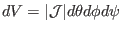
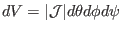
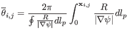
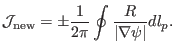

Next: Jacobian for straight-field-line poloidal Up: Calculating coordinate Previous: Jacobian for equal-arc-length poloidal
The volume element in
 coordinates is given by
. If we choose a Jacobian that is
independent of
coordinates is given by
. If we choose a Jacobian that is
independent of  , then uniform
, then uniform  grids will correspond to grids
with uniform volume interval. In this case,
grids will correspond to grids
with uniform volume interval. In this case,
 is written as
is written as
|  | (198) |
|  | (199) |
yj 2018-03-09